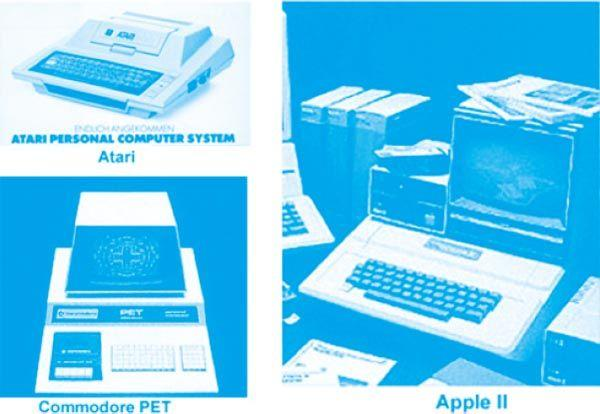
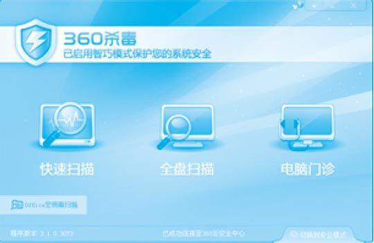

颠覆式创新是人性的表达
颠覆式创新是人性的表达颠覆式创新是人性的表达
我认为创新有三种形式。第一种形式很难发生，那就是发明。发明一种从来没有过的新技术、新材料在今天越来越难了。大家不要动辄就把创新跟发明画等号，并不是每个人都能成为爱迪生，但即便你不是爱迪生，你一样可以创新。
还有两种创新形式：一种是从商业模式上创新，就是把贵的东西做成便宜的，收费的做成免费的；一种是从体验上创新，就是把复杂难用的东西变简单，把笨重的东西变便携。我们可以发现，商业史上对市场格局的颠覆，绝大多数都是商业模式上的创新和用户体验上的创新，而不是像发明了可口可乐那样的秘方，或者像做出了电灯轰动世界，颠覆市场。
关于商业模式的颠覆，我在前面讲了免费，其实就是讲了商业模式的创新所形成的颠覆性力量。实际上，用户体验上的创新，或者说用户体验上的创新所产生的颠覆性力量，在互联网上是最多见的。
为什么免费的商业模式和用户体验上的创新会形成颠覆？因为把贵的变得便宜，把收费的变成免费，符合人性的需求。同样，把复杂的变简单，把笨重的变便携，也符合人性的需求。
商业的本质就是让人性得到释放，颠覆式创新也不例外，归根结底就是怎样满足人性。人是懒惰的，你把东西做得很简单，很多人就愿意去用。人是贪便宜的，你把东西做得便宜，甚至做得免费，很多人就愿意去用。美国指责我们中国人用盗版软件，看盗版电影。但美国人民一到中国，就会买回国大量的盗版电影。美国人民一样贪便宜，最早的团购网站是从美国起来的。为了能到餐馆吃到打折的大餐，他们同样也很踊跃。专卖店里半价甚至1折促销，不管中国人民还是美国人民，都会买一堆不用的东西带回家。这是人性在起作用。麻省理工学院曾经专门做过一个实验，发现一旦把一样东西免费，人们就丧失了理智，丧失了辨别能力，蜂拥而上。在爱贪便宜爱免费上，是不分肤色、宗教、种族的。
再举一个例子。当年惠普公司做平板电脑，每台售价是399美元，好几年没卖出几台。后来，惠普公司宣布不再生产这款产品，决定甩卖清仓，每台售价定为99美元，结果不到一天全美的存货一抢而空。这说明降价和免费的力量是巨大的。
同样，从人性的角度看，人都是懒惰的。用户选择产品，目的其实很简单，就是不要让他动脑子，不用让他费力，就能帮助他解决问题。所以，你把产品做得很简单，这就变成了产品的优势。苹果为什么这么成功？专家们分析其产业链和生态系统，说得很玄乎。其实，苹果的用户体验简单到极致，它就用这一招撼动了微软的统治地位。如果你能发现产品里还有很多痛点，还有很多不方便的地方，然后你能把它做到简单方便，那你就有可能会做出一个颠覆性的创新。
我经常用“小白用户”来称呼那些普通用户，有的用户就质问我：你怎么老是羞辱我们？让别人感觉我们跟大白痴一样。我说：你这是误解。人又不是全能的，小白并不是说这个人是白痴，而是说在某个领域不具备专业知识。就像我们去餐馆点菜，难道我们一定要去研究地沟油吗？我使用电脑，就一定得变成一个电脑专家吗？像我这样的，离开电脑领域，同样是一个小白。在别的领域，我选择产品其实很简单，就是不要让我去思考。今天物质这么丰富，选择这么多，同类产品这么多，我难道会为了用某些东西，一定得读上好几本说明书吗？
颠覆式创新是屌丝的逆袭
很多人对于颠覆式的创新有一个误解，以为颠覆式创新是一夜之间发生的，一出来就是高大全。其实不是，所有的颠覆式创新在刚开始出现的时候，都有一个典型的特征，那就是不被主流市场的领先者所看好，我管这个叫“屌丝的逆袭”。
下面这张图片左边是早期的个人电脑，右边是当时大名鼎鼎的苹果II，现在看起来好像是一台非常普通，甚至是简陋的机器，但当时已经算是很先进的个人电脑了。在一本书里面，作者描述了苹果之前的个人电脑，读到这里仿佛身在史前时代。
“Altair 8800既没有键盘，也没有显示器，程序的输出输入全靠前面板上的开关和指示灯来实现。前面板中央每个开关代表一个二进制位，拨到上面是1，拨到下面是0。输入程序其实就是用手连续拨动开关。一段最简单的算数程序，就要拨动几十次开关。要是做个复杂的统计计算，几百次的开关拨动是必需的。程序运行后，前面板最上面的8个红色指示灯就会显示运行结果——当然，那也是一个二进制数字。”

早期的个人电脑和苹果II个人电脑
个人电脑一出世，浑身都是缺点，长得也不好看，甚至看不出来能解决什么问题，看不出来有什么商业价值。个人电脑在1975年刚出来的时候，就是一个玩具，计算能力非常差，连外壳都没有，也没有今天的显示屏，跟当时的大型主机根本不能比。当时几家做大型主机的公司都得出结论：个人电脑这玩意儿不可能成气候。所以，当工程师向DEC公司的创始人肯 – 奥尔森展示个人电脑的初期设计时，奥尔森问道：“人们为什么需要拥有自己的电脑呢？”等到他同意开发个人电脑的时候，他和另一位工程师曾拆开个人电脑一窥究竟，结果他对其内部结构冷嘲热讽。
但是，个人电脑为什么成气候了？从用户体验角度出发，在个人电脑出来之前，每个人去上机，都必须穿上白大褂，换上拖鞋，到一个守卫森严的机房里面。但个人电脑第一次给了所有的用户一个冲击：只要花1 000美元，就可以在家里有一台自己的电脑，想怎么折腾就怎么折腾。它在人性上打动了消费者，它不需要做十大功能，不需要每个功能都吸引消费者。只要一个功能打动人心，就会有消费者用你的产品，你就赢得了市场，就会有不断改善产品的机会。个人电脑经过几十年不断改进，今天已经成功地颠覆了传统的大型主机。今天个人电脑的计算能力和应用丰富度，已经远远超过30年前的大型主机，这就是我说的一个屌丝实现了对高富帅的逆袭。
在计算机市场上，经常上演的是“次优者胜”，因为在占据市场主流地位的公司不注重“次优者”，没有看到“次优者”打动消费者的那一个甜点。结果，在大公司的眼皮底下，“次优者”会迅速占领市场，形成事实上的标准。
实际上，DEC公司也曾经作为“次优者”以小型机打败了IBM公司。1965年，DEC先行开发出了小型计算机，但IBM因受大型机视野制约，没有投入资源进行小型机的技术开发。直到1986年，IBM才研制出AS/400小型机参与竞争，但小型机市场的领先地位已被DEC占据了。
为什么个人电脑会先后颠覆了DEC的小型机和IBM的大型主机？今天个人电脑的计算能力的确很强大，但最初的个人电脑刚开发出来的时候，计算能力非常弱。《乔布斯传》[2] 里有个故事，说的是乔布斯带着第一代苹果电脑去找惠普合作，结果被惠普拒之门外，因为惠普认为这只是一个玩具。当时的个人电脑既没有先进的技术，也没有强大的计算能力，唯一的优点就是方便。现在像我这样的70后还记得，20世纪90年代初期，我们在大学里学计算机，还得换上白大褂，换上拖鞋去机房上机。你觉得方便吗？不方便。你作为工程师，可能觉得方便不方便这件事很小，但在消费者看来却很大。最后，方便的个人电脑最终打败了大型主机和小型机。
所以，颠覆式创新刚出来都是屌丝的市场，没有一种颠覆式创新刚出来就走高富帅和白富美路线。颠覆式创新刚出生时都是满身缺点，不一定是完美的，更不一定是先进的，但是它一定在一个点上做到了极致。
我举个例子。在90年代初期，大家还在用调制解调器拨号上网的时候，因为网速慢，图片的下载速度慢，所以互联网上的内容大部分都是文字，大家去网上看新闻，其实都是读文字的。我记得那时候，有不少传统媒体对互联网表示很大的质疑，认为互联网只能传播简单的文本，不能传输图文并茂的信息。但是，十多年来，互联网已经改变了人们获得信息的习惯，特别是当智能手机人手一部的时候，互联网最大的方便就是不用买报纸，所有的新闻都是免费的。有了搜索之后，大家就可以挑自己爱看的信息。这种体验的改变，使得很多人喜欢看互联网上的东西，传统媒体已经比不过互联网的丰富和便捷了。
360是如何颠覆传统杀毒市场的？
有的人说，360能够做到杀毒软件市场第一，全是靠免费。这话有一定道理，360的免费杀毒对传统杀毒市场来说，是一种商业模式上的颠覆。免费完全消除了价格歧视，把用户的使用门槛降到了零。用户使用360免费杀毒没有任何成本，因此就有可能一下子推广开。
但是，并不是说什么都是“免费就灵”。其实早在2008年7月，我们推出了360免费杀毒的测试版。说实话，效果不好。我们购买了BitDefender（罗马尼亚安全软件品牌）的引擎，做了一些简单的本地化开发，做了做汉化，就推出来了。事实证明，不从用户需求角度出发，产品做得不好，即使免费，用户也不会买账，因为对用户而言没有价值。这款测试版的360杀毒太重、太卡、太笨，更重要的是不符合中国用户的使用习惯。这个失败一下子就说明，市场并不是一免费就灵的。
当时，竞争对手就像奥尔森嘲笑个人电脑一样都在笑话我们：瞧瞧，360号称的免费杀毒，就是这德行，说是放卫星，却放了哑炮。然后，他们就放松了心态，接着高高兴兴地去卖杀毒软件了。说实话，相对于那时收费的杀毒软件，360杀毒测试版就是“次优品”，除了免费，浑身上下没有什么优点。360杀毒测试版失败后，当然，我们也在反思，真的是卧薪尝胆。
反思是360的文化，反思不是一件负面的事情，并不是做错事情了才需要反思。每个人每天都需要反思，经验是过去的，要敢于不断否定自己。
对我来说，反思包括两个方面：第一，从过去的失败中能总结出什么经验，避免重蹈覆辙；第二，保持学习的心态，向用户学习，向竞争对手学习。
对360的人来说，市场份额说明不了什么问题，它只是过去的结果，并不能代表未来。所以，在公司例会上，看到一些同事以不屑的态度谈论竞争对手的产品，我会忍不住提醒他，当年我们推出360安全卫士的时候，竞争对手不屑地把我们称为安全辅助工具，当我们推出360免费杀毒的时候，竞争对手不屑地称我们简单、白痴、不专业。难道我们要重蹈覆辙，犯跟他们同样的错误吗？
我坚持要做免费杀毒。杀毒要免费，这是互联网的大趋势，即使我不干，别人也会这样干。在一年多的时间里，我们就一直埋头苦干，做了很多不起眼的工作。这些事不起眼，目标只有一个：让杀毒软件易用、有效，让用户用起来感觉爽。2009年11月，360免费杀毒正式版推出，别人以为又要放哑炮，结果我们放了一颗原子弹。
实际上，这些不起眼的地方就是微创新，就是用户体验的创新。它们聚沙成塔，集腋成裘，就能极大提升用户体验。
第一，我们先解决卡的问题，其实就是让杀毒软件变快。传统上，杀毒软件扫描硬盘时，只要发现病毒，不管是死的还是活的，它就要报。在改造BitDefender引擎的时候，我们换了一个思路想问题：像这种恶意程序，只有在运行的时候才会对电脑产生危害，这就跟一只大鳄鱼一样，它睡觉的时候是不会攻击人的。于是，我们就改变了报毒规则，不管有多少恶意程序，只有它开始执行的时候，360杀毒才会报毒，然后迅速查杀处理。这样，就提升了杀毒软件的速度，用户感觉顺畅了很多。
第二，改变了开机扫描的做法。传统杀毒软件是电脑一启动就开始进行安全扫描，一扫描就要占用大量的系统内存。用户一开电脑，就要处理一天里最重要的事，让用户等着杀毒软件，这很不厚道。于是，我们就做了一个小改变。开机后不做扫描，让用户把重要的事干完，再过一段时间才在后台开始扫描工作。
第三，改变了杀毒软件的界面。360的界面做得非常简单，只有三个按钮：快速扫描、全盘扫描、指定位置扫描。360杀毒软件刚一出来，又引起一阵哄堂大笑，人人都说：杀毒软件怎么能做得这么简单呢？怎么能做得这么白痴呢？太不专业了。事实证明，用户就是喜欢这样“简单”的软件。软件看着很简单，用户用着很方便，所有的技术都放在后台。
技术至上主义者喜欢把界面搞得跟迷宫似的，让用户看着望而生畏；喜欢把文字说明搞得跟微软的帮助文件似的，让人丈二和尚摸不着头脑。这完全违背了这样一个道理：用户选择产品，就像西方民主国家选择总统一样，永远是选择那些亲近选民的、把话说得通俗易懂的、能够代表选民利益的。技术至上主义者如果不改变思维，还生活在精英治国的语境下，用户注定是不买账的。
第四，不打扰用户。我一直认为，杀毒软件作为安全软件，是用户的保镖，出危险的时候要及时出手，平安无事的时候就得老老实实地在身后待着。还有，给用户安全提示，也得分什么时候。比如，你在全神贯注地玩儿游戏、看电影，或者演示PPT的时候，突然冒出来一个打补丁的安全提示，用户非火大了不可。所以，360免费杀毒默认开启免打扰模式，用户在玩儿游戏或者运行全屏显示的程序时，360杀毒软件不弹窗提示，推迟升级、查杀任务。这样做，第一不在用户聚精会神的时候打扰用户，第二不占用电脑资源，优先保证用户完成手头上的任务。
其实，不光是360免费杀毒，360的其他产品也有很多这样的微创新。对360来说，用户至上不是一句虚话，它切切实实通过产品展现出来了。
在360，我们提倡“三个凡是”：凡是用户提的问题，一定要追根述源，找到问题的原因，从用户的角度想解决的方案；凡是负面的信息，即使是对手的枪稿，也要找到可以改进产品的启发点；凡是竞争对手的产品，都必然有学习借鉴的优点。

360杀毒的界面做得很简单，傻瓜化
当2010年初腾讯抄袭360安全卫士，推出QQ医生的时候，网络上不少人惊呼，这对360是一个巨大威胁。恰恰相反，我认为这是好事，这给360提供了近距离学习腾讯的机会，知道腾讯是怎样定义用户体验的。班上的尖子生要手把手地帮你提高学习成绩，多好的事儿啊。
“颠覆”和“破坏”不是贬义词
小时候，我喜欢阅读官渡之战、赤壁之战等三国故事以及《说岳全传》 中的八百破十万这样的故事，可能由此也在骨子里自然埋下了以弱胜强的情结。
其实，像赤壁之战这样以弱胜强的案例可以说是战争中的颠覆式创新，但我认为这更是一种术，因为战争是零和游戏，没有产生新的价值。我更欣赏硅谷引领的颠覆式创新，我认为这是一种道，是推动社会进步的动力。
熊彼特是创新理论的鼻祖，他认为创新就是生产技术的革新和生产方法的变革，对现代资本主义的经济发展起着至高无上的作用。而他提出的“破坏性创新”，是把一种从来没有过的关于生产要素和生产条件的新组合引入生产体系。从这点来看，福特并没有发明什么新的汽车技术，但是他建立的组装生产线提高了汽车的生产效率，因此是一种破坏性创新。
我认为“破坏性创新”和“颠覆式创新”是一回事，用更地道的话说，就是商业“革命”。
颠覆式创新，就像自然界的新陈代谢一样，不断把老的、旧的公司从行业中挤出去。所以，这种颠覆式创新已经成为美国硅谷的一个象征。
破坏和颠覆，都是强调打破原有的平衡，建立新秩序。但这两个词在中文里都是贬义词，因为中国文化崇尚平衡、稳定、和谐。一说颠覆式创新，我们的潜意识就会觉得是反动的东西，就不由自主地想到阶级敌人搞破坏。我有些时候受邀给一些单位讲互联网里的颠覆式创新。讲完后，有的领导就过来跟我握手说：小周，讲得挺好的嘛，只不过以后不要讲颠覆、讲破坏，影响社会和谐。
但是，在商业环境中，一旦出现和谐，就说明市场出问题了。比如，2008年，中国所有的奶企都按照潜规则在牛奶里加入三聚氰胺，丝毫不顾及消费者的利益，不顾及婴幼儿的健康，直到三鹿的丑闻曝出，整个牛奶行业名誉不彰，声誉遭受严重打击。
只要有市场竞争，就会有利益受害的企业。一个企业通过颠覆式创新赢得市场，那一定会有别的企业利益受损。但从另一方面看，利益受损者一定是那些不思进取、墨守成规的公司。而颠覆式创新的最大受益者，其实是用户，而不是新兴的颠覆者。比如个人电脑颠覆了小型机，让DEC等公司赚不到钱了，看起来好像微软和英特尔成为最大的受益者，其实不是。最大的受益者是用户，他们都能买到个人电脑，而且价格越来越低，功能越来越强大。所以，我有个观点，颠覆也好，破坏也好，可能它伤害了某些企业的利益，让一些公司不像过去那样赚钱了。但是，它如果带来了技术和产品进步，最后能给消费者创造更大的价值，这种破坏和颠覆就是进步的。
换句话说，颠覆式创新是好是坏，用厂商的立场进行道德评判是没有意义的。
360是颠覆式创新者，在2010年用免费的商业模式和更好的产品体验颠覆了传统的收费的杀毒软件厂商，不仅砸了它们的饭碗，而且还把它们的锅给端了；在2012年推出反对欺诈、拒绝医疗广告的搜索引擎，从搜索巨头那里抢到了超过20% 的市场份额。结果是，这几年，360一直处于舆论的风口浪尖，各种谣言攻击不断。但是，360的颠覆式创新不仅让好几亿用户装备了强大的正版安全软件，而且每年为这些用户节省数百亿元的开支。另外，360的颠覆式创新逼迫其他安全厂商不得不向互联网转型，逼迫它们激发市场竞争和创新的动力。从这个角度看，360的颠覆式创新不仅有利于用户，而且有利于行业。
颠覆式创新为什么总是发源于小企业？
我受邀去讲颠覆式创新的时候，一般会推荐两本书，就是哈佛商学院教授克里斯坦森教授写的《创新者的窘境》和《创新者的解答》 。我认为，不管是大公司，还是小公司，都应该熟读这两本书。它们不是灵丹妙药，但是能让你知道当你做得最好的时候，可能正是被一种看不见的力量颠覆的时候。
克里斯坦森教授经过多年的研究和观察，发现科技变革的速度和难度，都不是导致领先企业失败的原因。事实上，一旦有改良式创新的机遇，不管是大型企业还是新兴企业都会投入资源、开发产品。但是，因为大型企业实力雄厚，资源丰富，在研发中总是处于领先地位。相反，颠覆式创新或者破坏性创新提供的，是一种完全不同的套路，只有远离主流市场或《创新者的窘境》和《创新者的解答》中文版已由中信出版社于2010年6月和2013年10月出版。——编者注对主流市场没有太大意义的新兴市场，才会重视这些产品组合的属性；破坏性创新，会由于进入的是新兴的、迅速发展的市场，通常反倒可以获得巨大的价值。
同时，克里斯坦森还发现，破坏性创新的本质是创造新的需求和新的市场。
颠覆式创新一般都是小型创业公司做的事。小型创业公司之所以能够获得成功，就是它们正在做一些成熟企业认为不值得去做的事。尽管在技术、品牌、生产能力、管理经验、营销网络以及现金数量方面都具有优势，但大型企业对一些虽然可能代表市场方向，却不符合其赢利模式，甚至损害其赢利模式的项目上犹豫不决，进退维谷。这个时候，传统管理经验便成了大型企业依赖的路径，也正是这些成功的“经验”，当面对颠覆式创新者的时候，将瞬间崩溃。
这就是我经常说的“欲想成功，必先自宫”。
克里斯坦森对计算机产业从1952年到1995年的发展进行了深入的研究和分析，随之发现，在近50年的发展中，成熟的IT企业总是在技术和市场的发展中倒下。
比如，在1976年主导这个行业的17家企业中，到1995年，除IBM之外的另外16家企业的计算机硬盘业务都已失败或被收购。另外，这个行业中除IBM、富士通、日立和NEC公司之外，其他存活到1996年的企业都是在1976年之后成立的新兴企业。
克里斯坦森发现，计算机产业的发展过程表明，存在着两种类型的技术变革。一种延续了IT硬盘行业对产品性能的改善幅度，而且性能改善的难度有一个从渐进到突破的范围。计算机行业的主流企业在研发和采用这类技术方面，总是处于领先地位。与之相比，第二种创新则破坏或重新定义了性能改善模式，这种变革常常导致行业领先企业的失败。
由此，克里斯坦森提出了“破坏性创新”的概念。
颠覆不是敲锣打鼓来的
今天，几乎每个人都能感觉到互联网的革命性力量，每个人都在谈论互联网思维。但是大家想一想，今天互联网的排山倒海之势，颠覆一切商业游戏规则的力量，是一夜之间发生的吗？不是，所有的颠覆式创新都不是敲锣打鼓来的，而是隐藏在一片噪声里。它是代表未来趋势的一个信号，但你却通常看不到、看不懂、看不清。
所以，一定不能以一种藐视的态度看待新生事物。它可能满身缺点，你用自己的优点比它的缺点，基本上你会全胜。但是，颠覆你的这个东西，不需要做成十项全能，它只要在一个点上追求极致，做得远远超过你，这就足够了。
几年以前，我跟国内的运营商交流，就曾警告说：彩信和短信业务，要么主动免费，要么把它的体验做得更好，否则就会被另一种形式所颠覆、所取代。今天，微信不仅冲击了运营商的短信和彩信业务，连它们的话音业务也受到巨大的冲击。微信的技术没有什么特别，它也是借鉴了美国一家小公司的技术，但是把运营商收费的东西都免费了，而且体验上做得比运营商好，再加上腾讯的推进速度很快，微信就形成了对运营商的颠覆。
很多人以为360颠覆传统的安全市场，靠的是免费。错了，我们其实在用户体验上也做过很多工作，只是你用起来可能没感觉。前面我已经提到过几个360免费杀毒的例子，这里再举一个其他的例子。
有人说360的安全软件不专业，因为看起来很娱乐。我们的专业性能很强，但刻意把软件做得娱乐，这一点也没错。比如，现在流行一种“开机体”，是打开电脑后360开机小助手告诉你今天的开机时间是多长，打败了全国多少用户。今天你开机用了1分钟，你会感觉自己落后，这样你就会想办法加速。你今天启动电脑用了20秒，你在中国是前1%，你也会很开心。但我们刚做“开机体”的时候，传统的杀毒软件公司很瞧不起我们，说：怎么能把很严肃、很高科技的东西做成这样娱乐化的东西呢？实际上让消费者对产品有感知是很重要的。
360软件有体检，完成各项安全检查，最高分是100分。大家从小都想得100分，得了100分就很开心，得不了就想办法要得100分。这样，大家就会很愿意使用360的软件。我们每天给用户的电脑体检，做了很多细节的工作，其实就是让小白用户对我们的产品有感知。
不要小看这些细节，任何颠覆性的创新都是从细节入手，从不起眼的地方出发，不断纠正自己的缺点，不断地完善。当有一天你注意到它的时候，你已经无法抵挡它的颠覆性力量了。
颠覆式创新，需要逆向思维
我对颠覆式创新的另一种理解，就是一定要逆向思维，反向操作。苹果的口号是“think different”，在我看来就是要跟别人逆着来，只有这样才有机会。其实，巴菲特也有一句名言：别人贪婪时我恐惧，别人恐惧时我贪婪。说实话，这是逆人性的，因为大多数人买股票都是追涨杀跌，所以他们都成不了巴菲特。因此，当你进入互联网，如果看什么主流就干什么，什么热闹就干什么，那对不起，根本就不会有你的份儿。小公司要是干和大公司一样的事，肯定干不过，因为在品牌、资金、资源各方面，小公司跟大公司根本拼不起。所以，小公司必须从大公司没看到或者看不起的地方起步，才有可能做大，才有可能颠覆。
推特的兴起是一种颠覆式创新，它与传统博客不一样的地方，是博客对字数没有限制，博主可以随便写；但推特限制你只能写140字。推特与脸谱网不一样，脸谱网是封闭的人际关系，用户之间相互要认识，是双向的；那推特就是开放的，不认识也可以，是单向的。正因为“逆向操作”，跟博客和脸谱网不一样，推特才可能做大。
大公司也一样。如果丧失了一个市场机会，别的公司通过颠覆式创新占据了市场主流，那么大公司即使投入再多的资金、资源，试图力挽狂澜，在非常多的情况下都是不成功的。
前面讲过，DEC通过小型机冲击了IBM的大型机市场，结果IBM用个人电脑打败了DEC。但故事还没完，我认为从根子上来讲，IBM就没把个人电脑当回事，只是把它当成了一个狙击工具，是为了保证自己大型机的销售利润。所以，IBM为了集中精力进行硬件开发，就把个人电脑的操作系统授权给了微软。没想到，随着IBM个人电脑兼容机大规模普及，微软和英特尔占据了个人电脑产业系统的核心位置，而IBM硬件逐渐被边缘化了。
IBM曾是世界上最大的计算机公司，也曾是世界上经济效益最好的计算机公司。1985年，IBM的通用大型机毛利率高达85%，中小型机毛利率高达50%，占世界通用大中型计算机市场的70％。然而，20世纪80年代后期开始，计算机向小型化的个人电脑发展。到了1993年，IBM连续亏损已高达168亿美元。IBM已不是电脑业的象征，电脑业有了新的偶像——微软和英特尔。
为了争夺个人电脑浪潮的主导地位，IBM和苹果结成了联盟，推出PowerPC芯片，目的是撼动英特尔对个人电脑业的控制。接着，IBM重点开发OS/2，来抢夺微软视窗系统在台式机上的市场。
但这种针锋相对的策略并不奏效，因为随着康柏和其他电脑制造商加入微软的阵营，IBM打阵地战的策略失败。90年代中期，IBM的新任董事长郭士纳做出决定，放眼未来，不再以OS/2和微软视窗系统在台式电脑上竞争，而是向软件和服务转型。
IBM试图通过阵地战撼动微软和英特尔的地位，结果失败了。10年后，苹果公司另辟蹊径，用一种新的方式建立了新的产业形态，撼动了微软和英特尔的领导地位。
再比如，大家公认中央处理器的王者是英特尔，有一家公司AMD一直在跟英特尔竞争，却一直不能超越英特尔。为什么？因为AMD一直跟着英特尔的游戏规则走，比谁计算能力更强。
但另外一家公司却在另一个层面上打败了英特尔，这家公司是ARM。ARM不比谁的计算能力更强。它就比功耗低，就做低端市场，就做不起眼的手持设备。手持设备最致命的就是耗电、发热。但当手持设备流行起来，手机、机顶盒、汽车、家用电器里面都是轻量级的中央处理器，ARM就起来了。ARM也投资不起英特尔那种10亿美元的大工厂，它就把所有的设计方案输出。今天苹果、三星、华为都做自己的芯片，但都是靠ARM的授权。这就像美国人不在本土打仗，却到其他国家空投AK47步枪，结果英特尔就陷入了人力战争的汪洋大海。反过来今天英特尔要学低功耗、低计算能力反而很痛苦，因为这需要引刀自宫。
颠覆式创新做好了，你会让对方所有的优点都变成包袱。今天ARM开始做服务器，开始向英特尔发起进攻。服务器本来是功耗最高的设备，但是今天大家开始讨论怎样建一个计算中心把功耗降下来，这就是ARM创造的新的游戏规则。
各种商业战争的案例，都教给我们一个道理，就是当你面对强手的时候，一定不要按照它的节拍跳舞，按照它的节拍跳舞你就死定了。你要想办法通过反向思维，通过逆向操作，在用户体验和商业模式上创造一种新的游戏规则。
乔布斯是如何对苹果进行颠覆的？
乔布斯在1997年重返苹果之后，在最初的三年也曾经在热门的个人电脑上进行微创新。比如，他设计了一些苹果机彩壳，一时间争取到了眼球，但并没有成功，卖个人电脑卖不过戴尔，卖系统卖不过微软。没办法，乔布斯只好从大公司看不上的MP3开始。
我认为，从2001年做iPod开始，乔布斯带领苹果重新踏上了创业的道路。iPod是一款MP3播放器，当时MP3已经满街都是。对于像微软、戴尔这样的大公司来说，MP3没有前途、没有价值。以马后炮的方式来看，乔布斯做iPod，实际上是打了一场侧翼战，避开了当时主流竞争对手的主战场，通过微创新，达到了颠覆市场的目标。
有人说，乔布斯的一生是神一样的传奇，但我觉得苹果的成功并不是高瞻远瞩、缜密规划的结果。从iPod到iPhone，中间究竟发生了什么？这是一个值得琢磨的问题。
乔布斯二次创业，是从一个普遍需求开始的，这是他成就一项伟大事业的基础。有人说，乔布斯善于创造需求，我觉得这是扯淡。没有人能够创造需求，对音乐的需求是人类与生俱来的，乔布斯所做的，只不过是通过iPod把听音乐的体验做到了极致，满足了人们的需求。
iPod之所以能够流行，首先在于它一流的设计，跟其他MP3相比，iPod鹤立鸡群。再一个微创新，是里面的东芝小硬盘，号称可以存储1万首歌，一辈子都听不完。从iPod开始，每一个微小的创新持续改变，都成就了一款伟大的产品。在iPod中加入一个小屏幕，就有了iPod Touch的雏形；有了iPod Touch，任何人都会想到，如果加上一个通话模块打电话会怎么样呢？于是，就有了iPhone；有了iPhone，把它的屏幕一下子拉大，不就变成了iPad了吗？
然而，一切看似眼花缭乱、万象丛生的东西，无一不是从那个“一”开始，那个“一”就是iPod。要知道，当苹果推出iPhone的时候，iPod在全球的销量已经超过了1亿部。这1亿多部iPod不仅为苹果创造了口碑，创造了品牌，而且也为苹果捕捉了不少消费者的体验。没有这个台阶，如果乔布斯一下子上来就做iPhone，也不见得会成功。
后来，乔布斯和苹果成了不少人崇拜的对象，大家开始学乔布斯做手机、做应用商店、做各种平板电脑。齐白石说过一句话：“学我者生，似我者死。”意思是，抄袭商业模式表面上来看最省劲，但简单抄袭肯定死，真正学到精髓的才可能生存。所以，如果要学习乔布斯，就要学习他的精髓，那一定得从iPod学起。这就像一个人吃了七个馒头吃饱了，你就觉得第七个馒头很神奇，看是用什么特殊面粉做的。这样学习乔布斯，肯定是舍本逐末。现在，大家觉得应用商店简直是神来之笔，但应用商店根源是在iTunes——既然能在iTunes上卖歌，那么为什么不能在应用商店卖软件和游戏呢？
乔布斯的战略不是大跨步的战略，而是一步一步地走，每一步都是在不断地捕捉当前的用户需求和市场状态。像每一个创业者一样，乔布斯进入这个未知领域，刚开始一定没战略。一些咨询公司做战略规划，往往是针对一个成熟的行业，是对一个已有的成熟套路的总结和改良。但是，当你进入一个未知领域，刚开始一定是摸着石头过河，什么都是未知，你得凭着自己的经验和直觉去把握每一步。对于苹果来说，这种直觉和经验就是做1亿部iPod所积累的经验，以及它多年来做苹果电脑时积累的失败教训。因此，直到苹果做iPhone，咨询公司的那套战略规划模式才会有效，在此之前都是在摸索，没什么战略。
商业历史上的颠覆式革命都是从一个小点开始，大概要持续5~10年，不会立即发生，所以就容易被忽视，甚至连颠覆者本人也未必能意识到自己是否做的是颠覆式创新。
乔布斯的拿来主义
1997年乔布斯重返苹果之后，苹果在核心技术上全面采用了拿来主义的策略，也就是说苹果产品上的很多东西核是别家的，或者是收购的，然后再在外面加一个壳。比如，iOS操作系统和Safari浏览器都是在别人的核心上加了一个苹果自己的壳。这是乔布斯对过去的自己的“反叛”，在我看来，这就是拿来主义。
就他的技术和产品思路来看，拿来主义就是不再重复发明轮子。相比之下，微软做东西很累、很辛苦。比如，视窗操作系统是微软自己从底层做起的，再加上自己的应用软件，要考虑跟老版本保持兼容，还要考虑支持世界上各种硬件驱动。乔布斯之前跟微软斗得厉害，但重返苹果后，苹果放弃了之前啥都自己做的路线，而是采用拿来主义的策略，比如iPhone上的不少模块就是现成拿来的，还有多点触摸屏技术。有一次，我跟一家运营商讲：你看人家苹果既没有试图去占领技术制高点，也没有非要建一套通信标准，而是把用户体验做到极致，一样在手机市场上搞了个天翻地覆，打败天下无敌手，甚至整合出iTunes、应用商店来。这种对既有技术的整合难道不就是一种创新吗？
过去，不少人有一个观点，认为从底层做出来的原创才叫创新，觉得做出核心来很重要，在核心上做什么反而不重要。但是，他们不明白，在某种程度上，壳比核还重要。用户体验好不好，都体现在壳上，都反映在你在核心上做了什么。苹果从2001年开始推iPod，这种满大街都是的MP3播放器并没有什么核心技术，但是苹果持续多年在壳上下功夫，追求极致，创造出一流的用户体验。这是决定iPod畅销不衰的基础，同时也创造了苹果进一步改变数码工业的条件。
乔布斯的拿来主义值得我们反思。拿来主义告诉我们，并不是什么都自己做才叫高科技。过去，很多技术公司从自己出发，千辛万苦做出一个东西来，觉得用户看不明白，没有热烈欢迎，就要去教育市场，教育消费者，高调宣传其中的核心技术。相反，苹果没宣传哪些技术是自己十年磨一剑磨出来的，但是用户只要一用就觉得好，就上瘾。所以，我觉得技术不管是不是自己原创的，只要能给用户带来比别人好的、一流的体验，那么就是在创新，这种创新与做出核心技术同样重要。
其实，乔布斯也吃过技术的亏。他离开苹果后，创办了NeXT公司，也是比较偏重以技术为主导驱动市场，结果市场并不买账。本质上说，乔布斯并不是搞技术出身的，苹果公司的另外一个创始人沃兹是真正的技术出身。但正是因为乔布斯不是搞技术的，所以在他眼里技术不是产品的根本。相反，很多技术出身的人过于迷信技术，变成了为了技术而技术。技术本来是手段，结果成了目的。为了技术而技术，其结果就是忽略了消费者。所以，我也经常告诫技术人员，包括我自己，做好产品服务消费者才是根本，用谁的技术、用什么技术都是手段而已。
所以，乔布斯重返苹果，应该是带着对时代的一种新认识，也是他离开苹果之后不断反思的结果。如果他早5年重返苹果，他的拿来主义很难成功，在当时不太可能成为主流。今天苹果产品表现出来的那种流畅的感觉，当时的软硬件即使能支持，也非常昂贵。但摩尔定律发展到今天，软硬件的条件具备了，用户体验时代来临了，于是乔布斯趁势而起，一发而不可收。
颠覆的力量来自于侧翼和聚焦
有两位大师，一位是艾 · 里斯，一位是杰克 · 克劳特，他们合著的《定位》是市场营销领域的一部划时代的著作。他们后来提出“品牌再定位”的理念，写了一系列的书，其中有一本叫作《营销战》（Marketing Warfare），有人翻译为《商战》。这本书是值得创业者好好读的，里面讲了很多以少胜多、以弱胜强的案例。我从里面总结出来一个感悟，就是颠覆的力量从来不是来自于主流的、热门的市场，而是来自于边缘地带，来自于侧翼。
我很喜欢读军事作品，在一定程度上，商战和战争有相通之处。比如，第二次世界大战期间，美英盟军开辟第二战场，是选择德国想不到的诺曼底去突破，而不是从德国军队防守最严密的地方去强攻。在商业历史上，颠覆的革命从来不是敲锣打鼓实现的。如果报纸、杂志、电视台连篇累牍地报道，连大街上的老太太都能说出两句，那么对不起，行业的老大哥们早就写了厚厚的分析报告，早就做了战略部署，重兵把守，就等着你来，这个时候想要颠覆，根本不可能了。所以，颠覆的力量一定来自那些老大哥们看了不屑一顾的事情，或者根本看不清、看不懂的事情，甚至是巨头们嘲笑的事情。
其实，无论是俞永福做UC，胡泽民做91，还是我在做360，能够发展到今天，是因为行业的巨头看不清、看不懂，给了我们三五年成长的时间。如果你做的事情行业巨头一看立马就反应过来了，那就算你把三个周鸿祎绑在一块儿也做不成。
所以，遇到创业者，我都强调一点，不要满脑子想着做平台，而是要找一个大公司看不到的角落，给用户解决问题。平台是大公司玩儿的事情。颠覆要的是微观力，而不是平台力。平台是产生不了颠覆力量的，大公司之所以能够成为平台，是因为它在解决用户问题的过程中把规模做大了，自然就变成了一个平台。而对我们这些没有资源、比较苦逼的创业者来讲，真正的颠覆力来自微观的地方，来自侧翼，来自边缘，来自把资源聚焦在一点上追求极致。我们经常讲，做得简单也好，做得便宜也好，最重要的是极致。
像马克 · 安德森本来是有机会把Netscape做成一个与微软匹敌的伟大公司的，但是他犯的一个致命错误，是在Netscape浏览器还没有打下深厚根基的时候就开始与微软公开叫板，惊醒了沉睡的微软。结果可想而知，微软利用垄断地位在操作系统中捆绑IE浏览器，就把Netscape赶出了市场。
所以，如果你心里想着要颠覆巨头，第一一定不要大声说出来，第二一定要打侧翼战。最忌讳的，就是看到巨头在那里大快朵颐，你冲进去要跟巨头分一杯羹。创业者要有一种坐冷板凳的精神，因为你做的不是最热门、最时髦的事情，媒体可能不想报道，排行榜也不给热评，你不要觉得没有意思。现在，很多企业都在做点评，但10年前张涛做大众点评的时候，有人看到它的商业模式吗？肯定很多人都是不屑一顾的。
创业小伙伴们最好低调些。好不容易有了一个想法，千万可别恨不得敲锣打鼓，今天去新浪做访谈，明天到搜狐亮个相。其实，创业早期的时候，最好不要让巨头看见，要适度地参加行业会议。但是，更多的时间应该跟普通用户泡在一起，琢磨他们有什么感性的需求，有什么问题没有得到解决，然后把你有限的力量聚焦在侧翼的单点上。3年之后，等你再亮相的时候，你会发现巨头就看不明白了。等它终于看明白了，就已经望尘莫及了，这样你才能真正获得颠覆的可能。
《创新者的窘境》《柔道战略》和《定位》
无论是互联网里刚刚起步的创业者，还是面临互联网挑战，准备进行转型但不得法的传统企业家，我认为有几本书值得反复去读。大家老觉得我喜欢挑战强者，说：你干吗没事找事挑战巨头呢？我说：大哥，真不是我闲得没事去挑战巨头玩儿，是我一个小公司要活下来，要有出路，但这些巨头公司不让我长大。还有的说，我可以避开巨头，去找蓝海，不是有著名的蓝海战略吗？那你告诉我，哪里是蓝海？中国这么多聪明人，全世界这么多聪明人，你想了一个主意，我估计10 000个人都想到了，1 000个人已经开始干了，100个人已经干得差不多了。而且在中国，如果你是在TMT（电信、媒体和科技）领域、互联网领域里，无论你进哪个领域，大公司在旁边看着，一看你干得差不多了，它就要跟进去和你竞争。跟巨头的竞争是所有创业者避免不了的一堂课，所以要学会跟这些巨人作战。
前面我提到过《创新者的窘境》和《创新者的解答》这两本书，我认为这两本书讲的就是如何进行颠覆式创新，里面提到的策略非常实用。我也看过很多管理理论方面的书，很多理论书籍我也看不懂，但《创新者的窘境》和《创新者的解答》这两本书我推荐大家一定要看。你可能经常刷微博，但是在微博上你是得不到智慧的，大家还是要看书才行。微博上是像方便面一样的东西，各种心灵鸡汤，140个字的总结如果能让你顿悟，那你算是高人。但是，那些心灵鸡汤其实都是正确的废话。所以，我还是提倡大家要看书。有几本书是我这几年来常看的，反正每次遇到困难的时候，我都会带着问题去翻这些书，看看能不能在这里面找到解决方案。
有一本书叫作《柔道战略》，讲的是小个子如何打败大个子。如果你把《创新者的窘境》看成颠覆式创新的道，那么《柔道战略》讲的基本上就是颠覆式创新的术。它就是讲了一些策略，一些容易操作的方法。比如，面对强大的巨头，你在自己实力还不行的时候就要装小狗，用咱们中国话来说，就是要低调，要当孙子。但我们看见有的人什么事还没干呢，就天天去新浪微博做访谈，天天接受媒体采访谈自己的宏伟理想。但这些有用吗？用户不会为你的宏伟理想埋单，他们都很现实，还是会问你的产品在创造什么。你的理想谈得太宏大了，结果惊动了敌人。马总（你们肯定知道我说的是哪个马总）看到后会说：这小子怎么这么张狂？明天你们研究一下这小子的产品，必要的时候抄一下。所以，我觉得要保持必要的低调，要抗拒虚荣心。
另外，《柔道战略》这本书还讲了一个策略，就是如何找到反关节点，或者叫杠杆。当你拿住一个关节，向对手施加力量的时候，敌人的反抗越大，就会越痛苦。比如360做免费杀毒，杀毒厂商跟不跟？你不跟就只能看着我攻城略地，占据市场；如果要跟进，那就要丧失收入，原来的商业模式就要崩溃。3Q大战的时候，腾讯抄袭360安全卫士，利用庞大的QQ用户基数，强行在用户电脑里安装腾讯的安全产品，试图把360驱赶出安全市场。于是，我们就做了一款扣扣保镖，这也是一个典型的柔道战略。我找到了马总的一个反关节，让马总不敢跟，跟了他会很难受，但不跟的话他就要丧失收入。这个反关节点就是腾讯QQ强行弹出的广告，用户对这种广告非常反感，但却给腾讯带来了大量的收入。用户使用扣扣保镖，通过设置可以过滤掉QQ的弹窗广告，这就是用户欢迎但对手不敢抄的产品。最后，马总一怒之下宣布“二选一”，逼着全国好几亿QQ用户删除电脑上的360软件，结果招致用户的强烈反对。这本书讲了很多这样的策略，例如当年eBay（易贝）怎么去应对亚马逊、雅虎的竞争。书中讲了一个很重要的原则，就是进攻敌人的时候，一定要找到敌人最珍贵的资产，想办法去攻击他的核心价值点，一定要让战火在别人的家园里燃烧，打败了也无所谓，因为打败了我大不了就撤出来。
还有，我推荐大家看《定位》这本书。这本书的作者写了一系列的书，比如《二十二条商规》《定位》《再定位》，出了一套，大概是22本。这些书其实讲的是一个道理，这个道理翻来覆去地写。但是这套书写得非常浅显、非常容易读，是我读过的所有管理书籍里读得最轻松的，全是短小的案例。《定位》更多的是拿大众消费品，像啤酒、薯片、洗发水来作为案例。那么在中国成功的案例就是王老吉，王老吉定位在“不上火”上，从而避开了跟可乐、红牛这些不同功能饮料的竞争。这本书讲了这种小企业如何建立品牌认知，我自己是定位理论的忠实信徒，这也是我学以致用的一套创业规范。
进入一个新的领域，特别是对于创业公司来讲，资源有限，这时候你一定要专注，要聚焦，专注于你的品牌定位，专注于你切入市场的点。很多时候，我们没有成功，是因为我们同时做好几个品牌，同时开几条战线。你做10款产品，希望每款产品有50万用户，但它远远不如你去做一款产品有500万用户更有价值。
我们做企业、做产品的人，都喜欢理性分析，会考虑用户会喜欢什么功能，我该给用户做什么功能，但消费者其实不理性，都是感性的。他看到一个东西，脑子就用1秒钟，甚至1秒钟都不到，就会快速地给你的产品做一个分类，给它定位。所以，刚切入市场的时候，你如果不能用一句话说清楚你是什么，你是谁，用户为什么要用你，那你这款产品一定是失败的。
实际上，在市场中成功了的产品，比如Instagram，把图片分享做到了最极致，连脸谱网都感到恐惧了，最后要收购Instagram。那你说脸谱网有没有照片分享功能？有，你甚至可以找到很多应用里面都有类似的功能。可是，你真的用了它的那些功能吗？我到美国的超市，都能感觉出为什么在美国能出这本书，这是因为你随便在美国超市，比如要买薯片，你往那儿一站，面前有各种各样的薯片，你站那儿立马就晕菜，你真的不知道要买哪一种。你要让顾客在这么多类似的东西里面找到你，那你就要用定位理论。
要找到自己的定位，找准自己的定位，然后像一把锥子一样，先在人们脑子中占据一个位置，而不是先去扩大市场份额。所以，这个定位系列很值得大家看，而且这几本书都值得反复看，因为它们是谈方法的书。你的经验越丰富，在现实生活中遇到的问题就越多，这时候你去读这些书，每一次的感受都是不一样的。
[2] 《乔布斯传》中文版已由中信出版社于2011年10月出版。——编者注